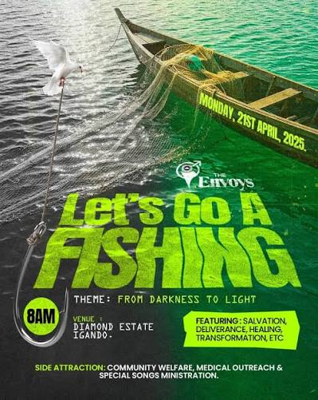
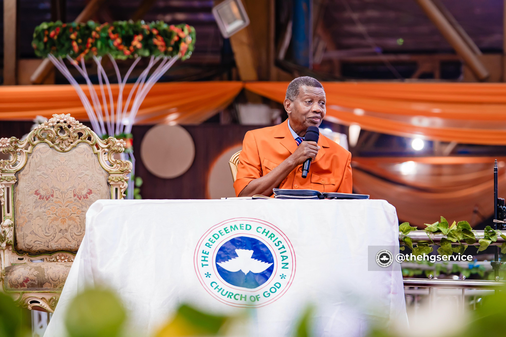
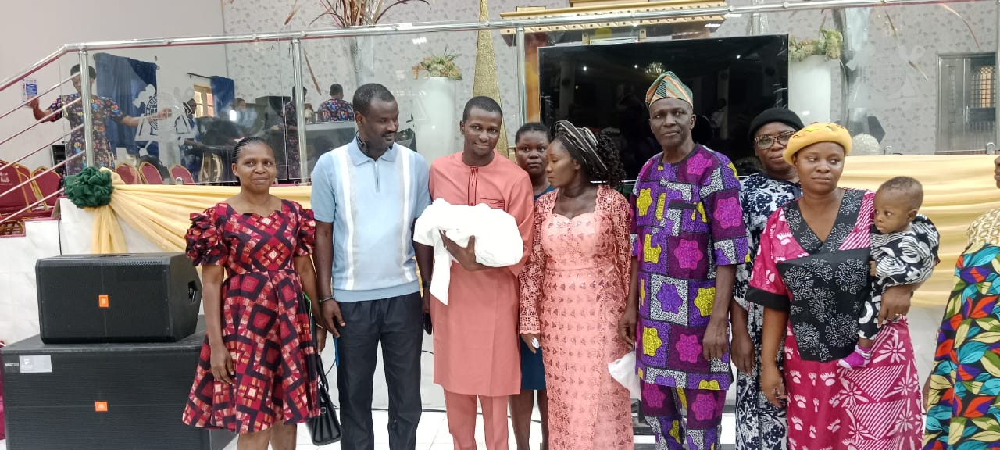
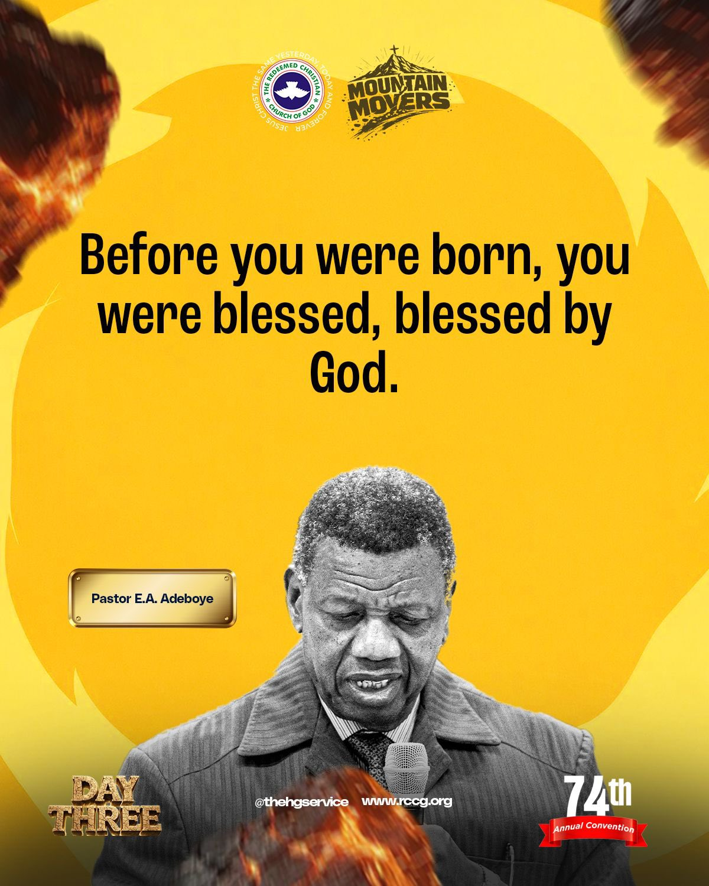
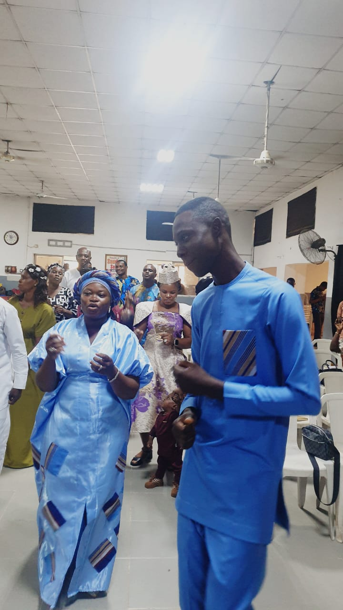
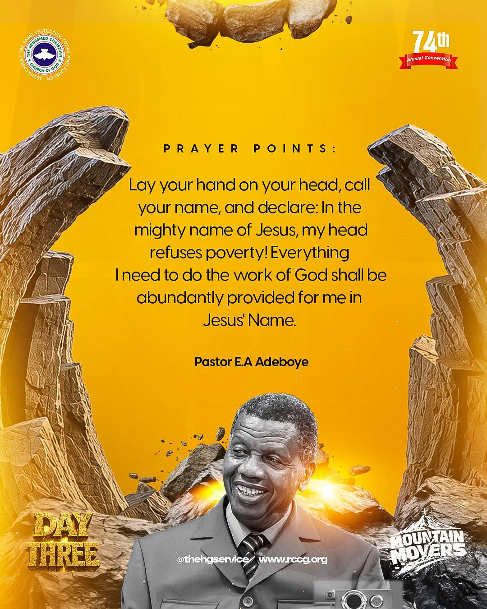
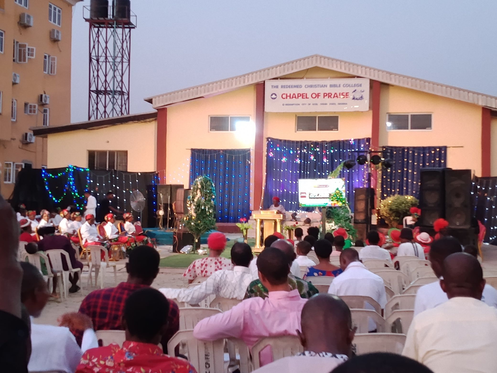

Chapel of Praise
Raising Christ's Ambassadors
The institutional campus parish of the Redeemed Christian Theological College inside Redemption City. A consecrated multi-generational house of worship, doctrinal integrity, and apostolic power.
“I was glad when they said unto me, Let us go into the house of the LORD.” — Psalm 122:1 (KJV)
Sunday Celebration & Word
Main Sanctuary & Youth Expression · 8:00 AM Prompt
Vision 2032: Explosive Growth. Deep Discipleship. 40 Million Souls.
The prophetic mandate given to the General Overseer, Pastor E.A. Adeboye — a global charge to accelerate evangelism, multiply fellowships, and expand the Kingdom exponentially. RCTC Chapel of Praise is fully aligned with this mission.
“Write the vision, and make it plain upon tables, that he may run that readeth it.” — Habakkuk 2:2 (KJV)

Let's Go A-Fishing
"Fishers of men" (Matthew 4:19) — this season, RCTC Chapel of Praise joins the global RCCG family for mass evangelism, church planting, and community impact.
“Follow me, and I will make you fishers of men.” — Matthew 4:19 (KJV)






Christ's Ambassadors Road
Located at the spiritual core of RCBC Main Campus inside Redemption City.
Weekly in His presence
Consecrated times of praise, expository discipleship, and prayer altar.
“Not forsaking the assembling of ourselves together, as the manner of some is; but exhorting one another.” — Hebrews 10:25 (KJV)
Celebration Service
Main Sanctuary & Youth Expression. Blended reverent praise, biblical preaching, and corporate worship.
View detailsDigging Deep
Expository verse-by-verse teaching and doctrine discipleship for students, faculty, and neighbours.
View detailsFaith Clinic
Intercessory prayer altar for healing, divine deliverance, supernatural breakthrough, and empowerment.
View details
A welcome to our campus parish
Beloved in Christ,
Welcome to the RCTC Chapel of Praise. Here at the main campus inside Redemption City, we do not merely train students academically; we nurture ambassadors who carry the supernatural life of Christ to the nations. Whether you are a theology scholar, youth seeker, or visiting guest, you have a home at this altar.
“And I will give you pastors according to mine heart, which shall feed you with knowledge and understanding.” — Jeremiah 3:15 (KJV)
A word from our elders
Messages of welcome and covering from those who watch over this house.
“Remember them which have the rule over you, who have spoken unto you the word of God.” — Hebrews 13:7 (KJV)
Prof. Rotimi Alaba Oti
"It is my joy to welcome you into a house where sound doctrine and the Spirit's fire meet. May you find here a family that will nurture you for the assignment ahead."
Dr. [Deputy Provost's Full Name]
"Every student who passes through this campus is being shaped for global impact. We labour daily so that what you carry from here outlives every classroom."
Pastor [Chaplain's Full Name]
"The altar stays lit because of you. Bring your burdens, your questions, and your praise — heaven is listening, and God still answers by fire."
Christ's Ambassadors
“Behold, how good and how pleasant it is for brethren to dwell together in unity!” — Psalm 133:1 (KJV)


Coming up
“To every thing there is a season, and a time to every purpose under the heaven.” — Ecclesiastes 3:1 (KJV)
Holy Ghost Service
Redemption City Arena & Global Broadcast · 7:00 PM
Sunday Celebration & Youth Expression
Main Sanctuary & Youth Church · 8:00 AM